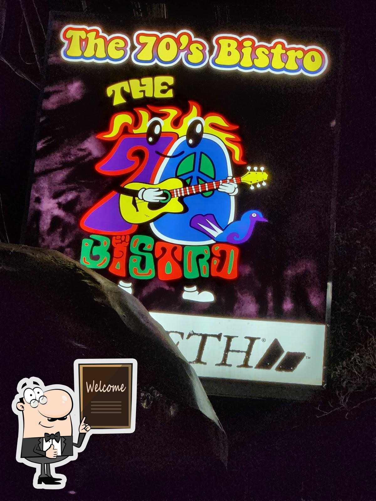

Protest & Folk
The first stage belonged to folk and protest singers with something to say.
The Jerks, Noel Cabangon, Jess Santiago
OUR STORY • SINCE DECEMBER 1992
A folkhouse that grew into a sanctuary for singers, poets, writers and artists.

The 70's Bistro opened its doors in December 1992 at 46 Anonas Street, Project 2, Quezon City, started by a group of friends with a simple idea: a folkhouse with a bohemian spirit.
It quickly became a sanctuary for folk singers, socially conscious musicians, poets, writers and artists, a place where you could be who you are and share what you made.
Early on, the stage hosted foundational protest and folk artists like The Jerks, Noel Cabangon and Jess Santiago.
The first stage belonged to folk and protest singers with something to say.
An early performance home for bands before they became household names.
Over its three-decade run, the bistro came to champion Pinoy rock, reggae, alternative and contemporary indie acts.